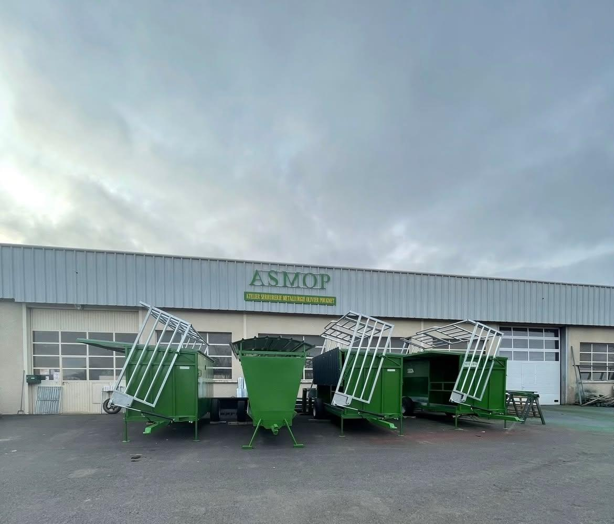
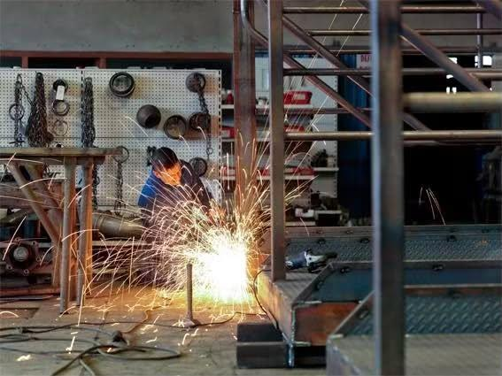

Valuéjols · Cantal · depuis 2004
Serrurerie,
métallurgie
sur mesure
Atelier de Serrurerie Métallurgie Olivier Pougnet. Nous fabriquons selon les besoins précis de chaque client, professionnels comme particuliers : usinage, matériel d’élevage, escaliers, portails.

Savoir-faire
Ce que nous fabriquons
Usinage
Pièces mécaniques en acier, aluminium, inox, téflon et autres matériaux, avec précision et finition adaptées.
Matériel d’élevage
Salles de traite, corrals ambulants, râteliers nourrisseurs, abris mobiles, bacs à eau et grilles à lisier.
Véhicules
Caisses à chiens pour pick-up et équipements métalliques sur mesure pour véhicules.
Citernes & remorques
Tonnes à eau, citernes montées sur essieux, remorques bennes et équipements en inox.
Serrurerie
Escaliers, portails et garde-corps conçus selon les dimensions, l’usage et le style souhaités.
Réalisations
Quelques-unes de nos fabrications
Pourquoi ASMOP
Votre besoin, fabriqué à votre mesure
Chez ASMOP, chaque fabrication part de votre besoin : votre usage, vos dimensions, vos contraintes. Nous réalisons à la demande, pour les professionnels comme pour les particuliers.
Sur mesure
Chaque réalisation est conçue à la demande du client, selon l’usage et les contraintes de l’exploitation ou du bâtiment.
Un atelier complet
Serrurerie, métallurgie, soudure et usinage : tout se passe dans notre atelier de Valuéjols.
Robuste et durable
Des fabrications solides, pensées pour la sécurité et pour durer, même en environnements exigeants.
Un atelier local
Installés à Valuéjols depuis 2004, au service des professionnels et des particuliers.
Des demandes très concrètes, déjà réalisées
- Un nourrisseur double de 3 tonnes à deux parcs hydrauliques
- Une salle de traite 8×2 places pour 16 vaches
- Une citerne montée sur essieux pour faire une tonne à eau
- Un escalier adapté aux contraintes du bâtiment
- Une balayeuse thermique en inox
- Des abris mobiles à auvent et barrières modulables

L’atelier
Un atelier à Valuéjols, depuis 2004
Installé au 5 rue du Lioran, l’atelier ASMOP conçoit et fabrique selon les besoins spécifiques de chaque client. Chaque réalisation est adaptée aux dimensions, à l’usage et aux contraintes de l’exploitation ou du bâtiment.
Robustesse, sécurité et durabilité : c’est ce que nous recherchons dans chaque soudure.
Parlez-nous de votre projetRecrutement
Rejoignez l’équipe
Nous recherchons une personne motivée et sérieuse pour rejoindre notre équipe dans le domaine de la serrurerie, de la métallurgie, de la soudure et de l’usinage.
Postuler en ligneLes candidatures sont étudiées dans les plus brefs délais.
- Poste
- Serrurerie / Métallurgie / Soudure / Usinage
- Temps de travail
- 39 h par semaine
- Contrat
- CDD évolutif vers CDI
- Rémunération
- Selon l’expérience et les compétences
- Lieu
- Valuéjols (15)
Contact
Un projet ? Parlons-en
Décrivez-nous votre besoin : l’usage, les dimensions, les contraintes. Nous fabriquons selon votre demande.